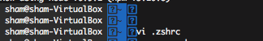
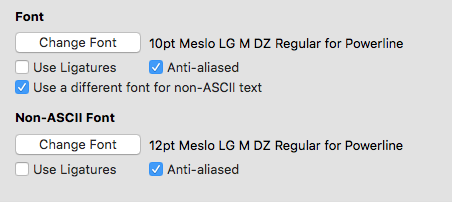

bash를 아름답게 사용할 수 있도록 도와 주는 oh-my-zsh 설치 및 설정 가이드
mac: brew, linux: apt-get
1 | $ /usr/bin/ruby -e "$(curl -fsSL https://raw.githubusercontent.com/Homebrew/install/master/install)" |
zsh 최신 버전 설치1
$ brew install zsh
oh-my-zsh 최신 버전 설치1
$ sh -c "$(curl -fsSL https://raw.github.com/robbyrussell/oh-my-zsh/master/tools/install.sh)"
.zshrc의 1
2```bash
$ vi ~/.zshrc
터미널 재시작 또는 아래와 같이 source 명령을 통해 적용 해준다.1
$ source ~/.zshrc
적용 되었을 경우, 아래와 같이 폰트가 깨는 현상은 만나 볼 수도 있다.

폰트 깨짐을 해결하기 위해서는 Powerline-patched font 설치가 필요 하다
설치 방법은 링크를 따라가서 따라하면된다.
mac의 경우, 폰트 적용은 설치후 iterm에 아래처럼 Meslo LG M DZ Regular for Powerline을 적용 해주면 된다.

이후, 아래와 같은 문구가 터미널 열때마다 뜬다면1
2
3
4
5
6
7
8
9
10
11
12
13
14
15
16
17
18Last login: Tue Feb 19 08:55:17 on ttys013
[oh-my-zsh] Insecure completion-dependent directories detected:
drwxrwxr-x 7 sham admin 224 Feb 19 08:17 /usr/local/share/zsh
drwxrwxr-x 6 sham admin 192 Apr 28 2017 /usr/local/share/zsh/site-functions
[oh-my-zsh] For safety, we will not load completions from these directories until
[oh-my-zsh] you fix their permissions and ownership and restart zsh.
[oh-my-zsh] See the above list for directories with group or other writability.
[oh-my-zsh] To fix your permissions you can do so by disabling
[oh-my-zsh] the write permission of "group" and "others" and making sure that the
[oh-my-zsh] owner of these directories is either root or your current user.
[oh-my-zsh] The following command may help:
[oh-my-zsh] compaudit | xargs chmod g-w,o-w
[oh-my-zsh] If the above didn't help or you want to skip the verification of
[oh-my-zsh] insecure directories you can set the variable ZSH_DISABLE_COMPFIX to
[oh-my-zsh] "true" before oh-my-zsh is sourced in your zshrc file.
ZSH_DISABLE_COMPFIX를 true값으로 .zshrc에 적용 해주면 된다.1
ZSH_DISABLE_COMPFIX=true
prompt에서 나오는 hostname/user네임을 없애거나 추가적인 기능을 넣고 싶다면, 아래의 파일을 열어 수정해주면 된다1
$ vi ~/.oh-my-zsh/themes/agnoster.zsh-theme
멀티 라인을 추가 하고 싶다면 아래와 같이 수정 링크참고1
2
3
4
5
6
7
8
9
10
11
12
13
14
15
16
17
18
19
20
21
22
23
24
25
26
27## Main prompt
build_prompt() {
RETVAL=$?
prompt_status
prompt_virtualenv
prompt_context
prompt_dir
prompt_git
prompt_bzr
prompt_hg
prompt_newline # 멀티라인 적용
prompt_end
}
# 멀티라인 적용, 커버모양 변경
prompt_newline() {
if [[ -n $CURRENT_BG ]]; then
echo -n "%{%k%F{$CURRENT_BG}%}$SEGMENT_SEPARATOR
%(?.%F{$CURRENT_BG}.%F{red})❯%f"
else
echo -n "%{%k%}"
fi
echo -n "%{%f%}"
CURRENT_BG=''
}
prompt에 prefix로 붙는 hostname이 맘에 안든다면 아래를 적용하면 된다1
2
3
4
5
6
7# Context: user@hostname (who am I and where am I)
prompt_context() {
if [[ "$USER" != "$DEFAULT_USER" || -n "$SSH_CLIENT" ]]; then
# prompt_segment black default "%(!.%{%F{yellow}%}.)%n@%m"
prompt_segment black default "%(!.%{%F{yellow}%}.)%n"
fi
}
git clone을 통해 코드를 zsh plugin에 받아온다.
1 | $ git clone https://github.com/zsh-users/zsh-autosuggestions $ZSH_CUSTOM/plugins/zsh-autosuggestions |
.zshrc에 아래와 같이 수정 해준다.
1 | plugins=( git zsh-autosuggestions ) |
터미널 재시작 또는 source .zshrc를 하면 적용되어 있는 것을 볼 수 있다!
xxxrc가 있다면 .rc_profile과 같은 녀석을 만들어 xxxxrc에서 불러주면 편해진다